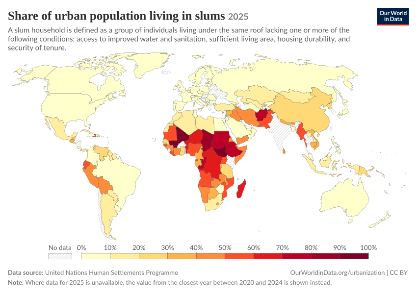

Who is on the map?
Water and sanitation in Kibera and Mathare, Nairobi.
Being on the map is the first step to being planned for. Scroll to see what residents have mapped and what the map cannot tell us.
A student project, KU Leuven. Built with open data from OpenStreetMap.
Introduction
What this page asks
Places missing from official maps are easy to leave out of plans for water, toilets and waste collection. In 2009 residents of Kibera made their own map. This page follows what happened next, from 2009 to a snapshot of today's map.
It tests one claim: being on the map is necessary and insufficient.
Introduction
Maps and who gets left out
A map is a set of choices about what to draw and name. What appears on a map can be counted, planned for and funded. What is missing is easy to overlook, whether it is a street, a clinic or a whole neighbourhood.
Residents of informal settlements and other marginalised groups in cities often face the same problems:
- Missing from records. In Rocinha, a favela in Rio de Janeiro, Google Maps showed about 3 streets in 2015 where satellite imagery showed about 10,000.
- Fewer services. Water, toilets and waste collection are planned from maps and data.
- Insecure homes. In July 2018, road demolitions in Kibera affected about 30,000 families, according to Map Kibera.
- Crowding on little land. Nairobi's poorest 60% of residents live on 8.7% of the city's land.
- Data that ages. Maps need funding and trained people to stay true.
Share of urban people living in slums, 2022
Missing Maps volunteers had mapped 3.5 million people who were not on existing maps by 2015. Hover over or click a marker for a postcard.
Sources: Reuters/World Economic Forum, 19 June 2015 (Rocinha, Missing Maps); UN SDG Report 2024; UNEP Kenya Atlas, p. 151 (an older estimate); Map Kibera. S-S Africa = sub-Saharan Africa.
Introduction
A map decides what counts
Whatever a map draws can be counted, planned and funded. Whatever it leaves out is easy to overlook.
Researchers who study maps call them a source of power. In the forest case Peluso studied in Indonesia, state maps left out villages and showed the land as empty and available for others to use.
Source: Peluso (1995), "Whose Woods Are These? Counter-Mapping Forest Territories in Kalimantan, Indonesia", Antipode.
Introduction
Counter-mapping
Counter-mapping means communities making their own maps to answer the official ones, often with the same tools. In 2009 young residents of Kibera did this for their own settlement.
This page asks what happened next. Did being on the map lead to water, toilets and waste collection, and who can use what the map shows?
How to read the map: the shape shows the type of facility (circle for water, square for toilets, diamond for waste). The colour shows who can use it, or what it costs. Use the key at the top right.
Before 2009
A blank spot on the map
Map Kibera describes Kibera as a blank spot on the map before it began mapping in 2009. A settlement missing from official records is easy to leave out of plans for water, toilets and waste collection.
See the before and after: Smithsonian Magazine (slider comparing Google Maps' view with the volunteers' map) and Geography Realm.
2009
Residents drew their own map
In 2009, young residents worked with the founders of Map Kibera to make the first free, open digital map of the settlement. The approach later spread to Mathare and other neighbourhoods.
Mappers walked the settlements and recorded taps, toilets and waste points. The records are open data on OpenStreetMap, and every dot you see comes from them.
2009 to today
What Map Kibera says happened next
In an interview for this project, Map Kibera Trust said the county government and NGOs asked for its water and sanitation maps to see where facilities were concentrated. It reports that the county then built toilets across Kibera, and used its health map to place clinics.
The same account describes schools: the map showed about 350 schools where government records listed about 70, and the state created a registration route for them.
Schools in Kibera (Map Kibera's account)
These are Map Kibera's own statements, not independently verified by this project.
2015 and 2018
Visible does not mean protected
Map Kibera told this project that the map does not protect residents from eviction, and that evictions happen often. Its use is evidence for advocacy, quick mapping of evictions as they happen, and pressure from outside bodies.
Map Kibera\'s own reports show the scale of the risk: in 2015 it expected 47 schools to be affected by railway works, and in July 2018 road demolitions affected about 30,000 families and more than 10 schools. Its mapping helped identify the schools.
It also named the main obstacle to keeping the map current: no recent funding, and trained mappers who leave for other work. A map shows a moment. Keeping it true takes money and people.
2026 snapshot
Visible, but usable?
Each shape is a facility someone recorded. Being on the map does not mean a resident can use it.
Many points have no access tag at all, so these are minimum counts for open and for restricted. Snapshot exported [date].
Colour shows who can use it. Switch to "What it costs" in the key. Toilets include those in schools, clinics and other buildings.
2026 snapshot
What it costs to use
Where a fee is recorded, … toilets charge and … are free. For water, … points charge a fee and … are recorded as free.
Most points carry no fee tag, so this layer shows what mappers noted, and not what residents pay. A toilet that costs a few shillings per visit is a different thing for a household than for a single user.
Two Nairobis · distance
Close on the map, far in services
Kibera sits about 6.6 km from the centre of Nairobi, and a few kilometres from suburbs commonly described as higher-income. The dashed lines show straight-line distance. The gap is in what each place can reach.
Nairobi's poorest 60% of residents
Key message: mapping makes this gap measurable.
Question: how many hospitals, pharmacies, schools and toilets can people in each place reach on foot in 15 minutes?
Sources: UNEP, Kenya Atlas of Our Changing Environment, p. 151 (the 60% and 8.7% figures, an older estimate); Wikipedia, Kibera (distance from the centre). Click a marker for a postcard. Marker positions are approximate.
Two Nairobis · water
Next door, a different map
Kibera and Karen are about 9 km apart. Karen sits in Lang'ata constituency, which leads Kenya in households with luxurious homes in the 2019 census.
- Water: a study of Nairobi's piped water found residents of high-income areas were six times, and middle-income residents four times, more likely to receive the WHO-recommended 1,500 litres per person per month.
- Connections: high- and middle-income residents mostly have piped water inside the home. Lower-income residents more often use communal taps or vendors.
- Losses: about 3.5 billion litres a month are lost to bursts, theft and irregular meters, more than twice what every resident would need to reach 1,500 litres.
Click the markers for postcards. This page's points cover Kibera and Mathare only, because OpenStreetMap records public toilets and taps and richer homes have them indoors, so counts are not comparable. Sources: The Conversation; The Standard (2019 census). Imagery: Esri, Maxar.
Keeping it current
What the map leaves out
It shows facilities only, with no homes and no people. A dot shows that someone recorded a tap or a toilet. It does not show whether water flows today, what it costs or who can use it.
Some places may be missing, out of date or untagged, and the same facility may appear twice.
Kenya
Map Kibera beyond Kibera
Map Kibera Trust says it now works across Nairobi and beyond. Click a marker to open a postcard with a key message and a question.
- Nairobi: Kibera, Mathare, Mukuru and Kangemi.
- Counties: Baringo and Makueni, where it helped county staff map projects with the World Bank, so residents can see what exists before choosing new projects.
Source: Map Kibera interview, 5 November 2026. Positions are approximate centres. A third county was named in the recording and is not shown because the transcript is unclear.
World data
The wider picture
Kibera is one of many places where people live outside official records. UN data for 2022 puts the world's slum population at 1.12 billion, 24.8% of urban residents. In sub-Saharan Africa the share is 53.6%, about 265 million people.
Share of urban population living in slums or informal settlements
The three countries in this story, 2018
Country figures: World Bank indicator EN.POP.SLUM.UR.ZS, 2018, via IndexMundi. Data file: world_slum_share.csv.
S-S Africa = sub-Saharan Africa. Source: UN, Sustainable Development Goals Report 2024, Goal 11 (indicator 11.1.1).
World data
Slums across the world
Our World in Data maps the share of urban people living in slums, from UN-Habitat data. Sub-Saharan Africa has the highest shares. The chart below it shows the three countries in this story over time.

Beyond Kibera
Counter-maps in other African cities
Other cities show the same pattern. A map gets used when an agency already needs the data, and it rarely stops an eviction.
- Mukuru, Nairobi. Community mapping of health facilities showed gaps, and the Ministry of Health recruited more community health volunteers for informal settlements.
- Digital Matatus, Nairobi. Informal minibus routes were released as open data. The project reports five apps built on it and use by UN-Habitat for transit planning.
- Ramani Huria, Dar es Salaam. Residents and students mapped drainage and flood history, and the data fed flood modelling.
- Makoko, Lagos. Residents mapped with drones in 2019 hoping to be recognised. No outcome is reported, and 24 waterfront communities had been demolished by January 2020.
These accounts come from the projects themselves and from news and NGO reports, not independent evaluations.
2014 · Nairobi
Digital Matatus
Nairobi's minibus system had no public map. In 2014 University of Nairobi students rode every route with phones and GPS devices, 130 routes in total, and the team released the data in open formats. The map was shared online and on paper.
NOVA reports that matatu drivers opened five new routes in the underserved north, and about 3,000 people had downloaded the map. ITDP used the data to model Nairobi's first bus rapid transit corridor.
Sources: PBS NOVA; ITDP, March 2014.
2015 · Dar es Salaam, Tanzania
Ramani Huria
Dar es Salaam floods in every rainy season, and many informal settlements were missing from maps. Ramani Huria ("Dar Open Map") began in 2015. It trains university students and residents to map with OpenStreetMap, with the World Bank, GFDRR and the Humanitarian OpenStreetMap Team.
Ramani Huria 2.0, first six months (from July 2017)
Drainage is fully mapped in 12 wards, and an atlas is in progress for the city's 450 sub-wards. The data feeds flood modelling and is printed for each ward's local government.
Sources: Wikipedia, Ramani Huria (figures from project reports); ramanihuria.org. Project figures are self-reported.
2019 · Lagos, Nigeria
Makoko
Makoko is a waterfront community on the Lagos lagoon. No census has ever been taken there. Estimates range from about 250,000 (a 2015 World Bank document) to millions (a community leader), and Google Maps shows it as a blank spot. In 2012 the government reportedly gave residents 72 hours' notice to leave.
In September 2019 Code for Africa and the Humanitarian OpenStreetMap Team launched a project. Young residents learned to fly drones and used a phone app to mark roads and points of interest. Its goals are to change the conversation with government about Makoko's legitimacy, support planning and estimate population density and housing quality. By late 2019 volunteers had marked about 80 points of interest and mapped more than 5 km of perimeter by drone.
Places of interest mapped in Makoko (82 points)
Chart rebuilt from "Places of Interest in Makoko" in "Neglected and Unmapped" (Mapping Makoko / Code for Africa, 27 May 2020); values read from the published chart.
Residents hold two views. Benjamin Aide, a school administrator who joined the mapping team, says the maps will "show the world that we are here". Some residents fear that more attention could invite new eviction attempts. The 2012 notice was never carried out in full, and Makoko's chief says residents still fear losing their homes. In Otodo Gbame, another Lagos waterfront community, more than 30,000 families were forcibly evicted, and a Lagos High Court ruled that unconstitutional in 2017.
No government response or change in Makoko's status had been reported by May 2020. An earlier waterfront regeneration plan, submitted in 2014, has not been carried out. Its author sees the new maps as a way to ground that plan in data.
Sources: Mapping Makoko, "Neglected and Unmapped", Code for Africa and the Pulitzer Center, 27 May 2020 (also on The Guardian Nigeria); Oluwatosin Adeshokan, "Mapping Makoko: How data could help legitimize Nigeria's informal settlements", Devex, 12 May 2020 (supported by the Pulitzer Center); Oluwatosin Adeshokan, "How Makoko, Nigeria's Floating Slum Went Digital With New Mapping Project", CNN, 26 February 2020 (syndicated copy; Pulitzer Center-supported). Population figures are estimates: locals say more than one million (CNN), Devex says about 300,000 without a source, and a community leader quoted in "Neglected and Unmapped" says 2 to 3 million.
Analysis
What the cases show
| Case | What was mapped | Who used it | Limit |
|---|---|---|---|
| Kibera | Water, toilets, schools | County, NGOs | Evictions continue; data ages |
| Digital Matatus | 130 routes | Drivers, riders, planners | Informal system stays informal |
| Ramani Huria | Drainage, buildings | Flood modellers, wards | Self-reported results |
| Makoko | Landmarks by drone | None reported yet | Visibility alone |
Pattern 1. Maps led to action when an agency already needed the data.
Pattern 2. Maps made communities countable. They did not give them power over evictions.
Pattern 3. Every case depends on funding and trained people to stay current.
Questions to take away:
- Who needs this data?
- Who keeps it current?
- Who decides what is shown?
Who decides
Who decides what is shown
Being visible can bring services, and it can bring risk. A 2011 study of Map Kibera by Berdou warns that mapping informal facilities can expose them to closure or government action.
Residents and the organisations that know the community should decide what appears on a map and who can use it. This map shows public facilities only.
More Map Kibera video: Kibera News Network channel, run by Map Kibera Trust.
Conclusion
Necessary, not sufficient
Maps led to services when an agency needed the data. Map Kibera and others report toilets, clinics, school registration and more health volunteers after mapping.
Being on the map did not stop demolitions. Evictions continued in Kibera and in other cities.
A dot is not access. Only … of … toilets are recorded as open to the public, and the map needs funding and people to stay true.
Sources
Sources and credits
Facility data: © OpenStreetMap contributors (ODbL), including Map Kibera and its 2020 water and sanitation mapping project. Base map: © OpenStreetMap contributors. Counter-mapping framing: Peluso (1995), Antipode.
World data: UN SDG Report 2024, Goal 11. Case studies: PBS NOVA and ITDP (Digital Matatus), Ramani Huria project pages, CNN (Makoko). Video: Digital Matatus, digitalmatatus.com. Map Kibera figures come from an online interview on 5 November 2026 and are the organisation's own.
Built by Hilda Narinoi Ries, KU Leuven, for the Individual Portfolio in Sustainable Development. This is a student project and not an official Map Kibera Trust product.